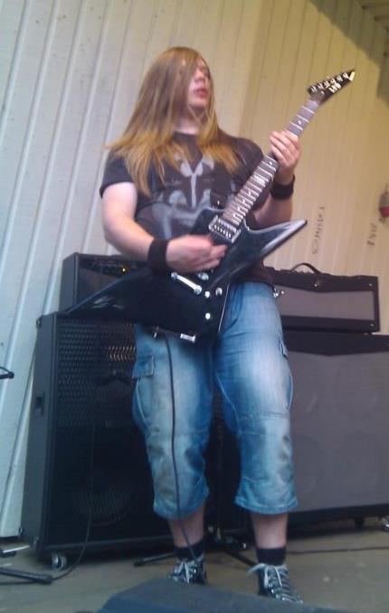

Låter det bra?
En ung musikers liv
Mitt namn är Oscar och detta är en sida i utbilningssyfte.
Jag läser webbprogrammerarutbilningen på Linnéuniversitet i Kalmar. Tidigare gick jag på mediaprogrammet i Nässjö där jag är född och uppvuxen.
På fritiden så håller jag på med musik och instrumenten jag kan spela är:
- Gitarr
- Är mitt främsta instrument och det har jag spelat i cirka 6-7 år
- Bas
- Är jag rätt hyfsad på tack vare mitt gitarrspelande. Fick även vara inhoppare på en spelning med mina kompisars band I love you hate och spela bas.
- Piano
- Kan jag spela väldigt grundligt, har inte lagt så mycket tid på det.
- Trummor
- Är jag inte lika vass på som jag var förr.
Eftersom Kiss är ett av mina favoritband så kommer här en lista på album som de släppte under 70-talet.
- 1974
- Kiss
- Hotter Than Hell
- 1975
- Dressed To Kill
- Alive!
- 1976
- Destroyer
- Rock And Roll Over
- 1977
- Love Gun
- Alive II
- 1978
- Ace Frehley
- Gene Simmons
- Paul Stanley
- Peter Criss
- Double Platinum
- 1979
- Dynasty